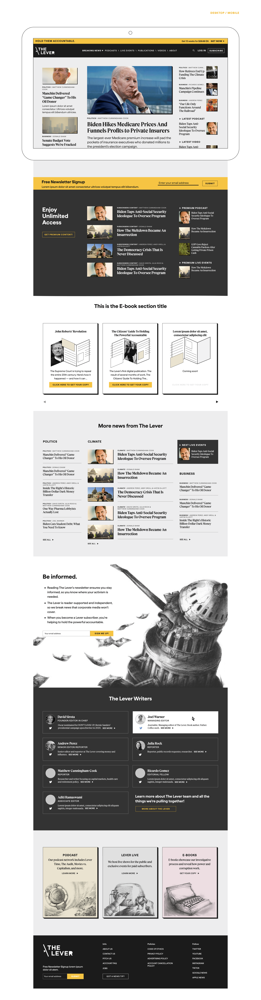
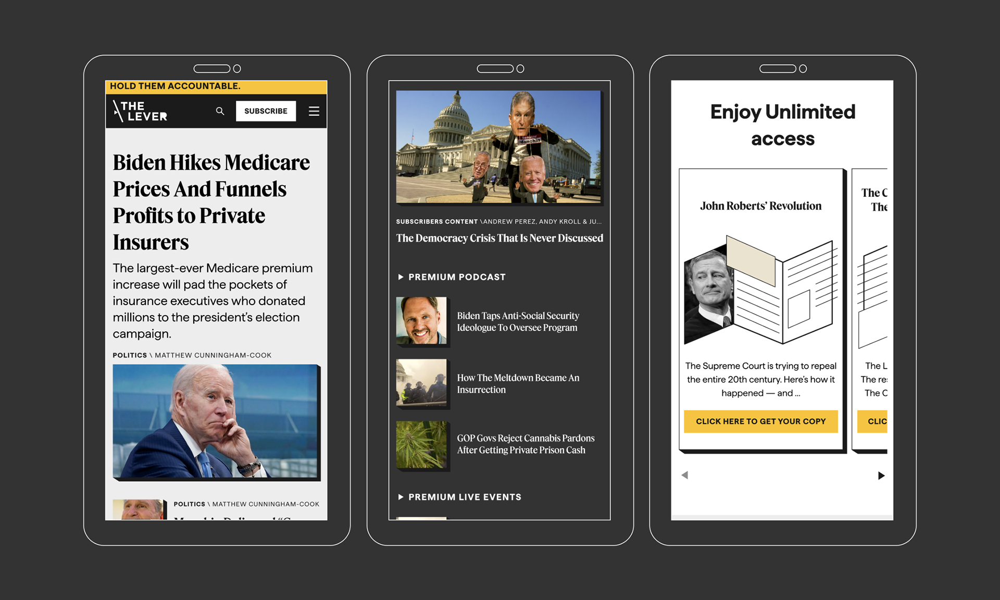
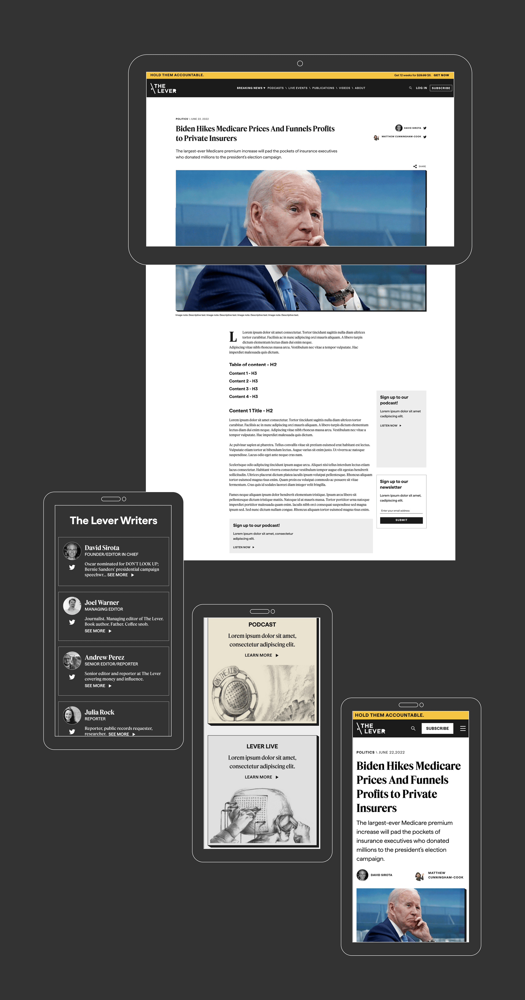
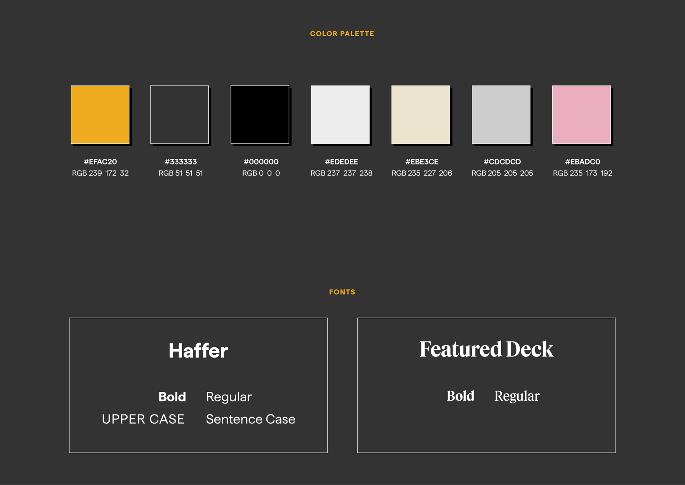

The Challenge
The Lever is a nonpartisan, reader-supported investigative news outlet that holds accountable the people and corporations manipulating the levers of power. Founded in 2020 by David Sirota — an award-winning journalist and Oscar-nominated writer — the organization needed a website that reflected its brand values and made its investigative journalism accessible to a growing audience.
Brand values: Radical Content · Nihilistic · Optimistic · Human · Courageous.
The challenge was to translate these values into a visual identity and user experience that:
- Communicates trust and authority.
- Highlights investigative journalism.
- Works seamlessly across desktop and mobile.
- Supports reader engagement and subscriptions.
My Role & Approach
As Product Designer, I led the redesign of The Lever's website — from visual strategy to responsive implementation. My focus was on creating a design that reflects the brand's bold, courageous spirit while ensuring readability and ease of navigation for a news-focused audience.
- Visual identity: Bold typography, a considered color palette, and a layout that feels authoritative and approachable.
- Information architecture: Organizing articles, podcasts, e-books, and team information in a clear hierarchy.
- Responsive design: Ensuring a seamless experience across desktop and mobile.
Visual Design Strategy
Desktop Design
The desktop experience emphasizes:
- Hero stories with strong visual impact.
- Clean grid layouts for article listings.
- Clear calls to action for subscriptions and donations.
- Podcast and e-book sections integrated into the content flow.


Mobile Design
The mobile experience maintains the same visual integrity while adapting to smaller screens:
- Collapsible navigation for a clean header.
- Responsive grids that stack content vertically.
- Touch-optimized interactions for easy reading on the go.


Design System
The redesign was built on a cohesive design system that ensures consistency across all pages and devices. Key elements include:
- Typography: Bold, authoritative fonts that reflect the brand's fearless journalism.
- Color Palette: A restrained palette with accent colors for calls to action and emphasis.
- Grid System: A flexible grid that adapts to content needs across device sizes.
- Components: Reusable UI elements for articles, podcasts, team profiles, and e-books.

Website Walkthrough
A video walkthrough of the redesigned website, showcasing the visual identity, responsive behavior, and key interactions.
Impact
The redesign positioned The Lever as a modern, credible, and reader-focused news outlet. The new visual identity and improved user experience support the organization's mission to hold power accountable — making investigative journalism accessible and engaging for a growing audience.
Key Takeaways
- Design must reflect brand values. The visual identity is not just about aesthetics — it's about communicating who you are and what you stand for.
- Responsive is non-negotiable. News is consumed everywhere. A seamless mobile experience is critical for engagement.
- Typography is a tool for authority. Bold, well-chosen typography can communicate trust and urgency without saying a word.
- Clarity drives conversion. Clear navigation and calls to action make it easy for readers to support the mission.